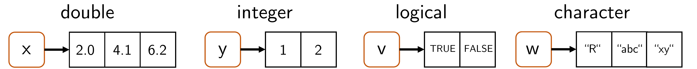

14 Vectors
In this section, we now want to get to know R vectors in more detail as a first fundamental data structure. Many principles that can be explained using vectors carry over analogously to more complex data structures in R, so that competent handling of the basic data structure considered here is indispensable in application contexts as well. It should be noted that the term vector in this section refers strictly to the corresponding R data structure, not to the mathematical object of the same name. Although R vectors resemble their mathematical counterpart in some properties and certain operations between R vectors can represent operations between the corresponding mathematical objects, vectors in imperative programming often have many more and different properties than the corresponding mathematical objects.
In general, when discussing a data structure, we first consider how it is generated using R code, by which properties it is characterized, how individual elements of the data structure can be indexed and edited, and which arithmetic operations are admissible for the data structure. Finally, we consider possible further special features of the data structure. In the context of R vectors, these include, for example, the concepts of data type coercion, recycling, or the representation of missing values in data sets.
R vectors are ordered sequences of data values. The individual data values of a vector are called the elements of the vector. Vectors whose elements are all of the same data type are called atomic. Here, the term vector always means an atomic vector. The central data types for vectors are the previously introduced numeric, (double, integer), logical, and character types. Figure 14.1 shows graphical representations of corresponding vectors.

14.1 Generation
We first consider the generation of one-element vectors, which are also called elementary values. Like all data structures, elementary values are generated by assignments of the form
Here, the specification of value determines what kind of elementary value is generated.
Elementary values of type numeric can be generated by assigning a number. By default, this creates an elementary value of type double. The numbers can be specified without decimal places, in decimal notation, or in scientific notation. Further possible values for generating an elementary value of type double are Inf and -Inf for positive and negative infinity and NaN (Not-a-Number) as a placeholder for numerical values.
[1] "double"[1] "double"[1] "double"Numeric elementary values of type integer are generated like double values without decimal places, followed by an L for long integer.
[1] "integer"[1] "integer"Elementary values of type logical can be generated by assigning the logical values TRUE or FALSE, or abbreviated as T or F.
[1] "logical"[1] "logical"Finally, elementary values of type character are generated by assigning values in single quotes ('a') or double quotes ("a").
[1] "character"[1] "character"To combine several elementary values into one vector, one concatenates them with the function c(). The term concatenation is derived from the Latin catena (“the chain”).
Not only elementary values, but also vectors with elementary values or with other vectors can be concatenated. With the vector x above, for example, one generates the following vectors y and z:
Vectors do not have to be generated from already existing values; “empty” vectors of a desired data type can also be generated. R provides the functions vector() as well as double(), integer(), logical(), and character() for this purpose. This is potentially helpful for already occupying computer memory at the beginning of a longer computation, so that no memory has to be searched for during program execution, which can increase program runtime under certain circumstances.
# generate "empty" vectors with vector()
v = vector("double",3) # double vector [0,0,0]
w = vector("integer",3) # integer vector [0,0,0]
l = vector("logical",2) # logical vector [FALSE, FALSE]
s = vector("character",4) # character vector ["", "", "", ""]
# alternative generation of "empty" vectors
v = double(3) # double vector [0,0,0]
w = integer(3) # integer vector [0,0,0]
l = logical(2) # logical vector [FALSE, FALSE]
s = character(4) # character vector ["", "", "", ""]However, the “empty” vectors generated in this way are not actually empty: v and w consist of zeros, l consists of the logical values FALSE, and s consists of the characters "". For initializing vectors as containers and then filling them in the context of a program, vector(), double(), integer(), logical(), and character() are therefore suitable only to a limited extent: if the code overlooks the filling of individual entries, computations are performed with the values generated by these functions, which is not necessarily intended. In the chapter on control structures, we will learn a method for initializing data structures while generating reasonably safe code.
Sequences
A frequent tool in programming is vectors that represent sequences of numerical values, for example as representations of the domains of univariate functions. R provides the so-called colon operator : and the function seq() and its variants for generating them.
The colon operator in the form a:b generates sequences of integer steps between \(a\) and \(b\) according to \[\begin{equation}
(s_i)_{i = 0,1,2...} \mbox{ with } s_i = a + i \mbox{ for } i = 0,1,2,... \mbox{ and } s_i \le b.
\end{equation}\] Here, “between a and b” specifically means that a is the first number of the generated sequence and b is the largest possible value. The following examples illustrate this.
The function seq() with the syntax seq(from, to, by), where from denotes the start value, to the maximal end value, and by the step size, offers further possibilities for generating sequences with non-integer step sizes as well. The following examples illustrate this.
[1] 0 1 2 3 4 5[1] 0.00 0.25 0.50 0.75 1.00 [1] 0.00 0.15 0.30 0.45 0.60 0.75 0.90 1.05 1.20 1.35 1.50 1.65 1.80 1.95 [1] 1.0 0.9 0.8 0.7 0.6 0.5 0.4 0.3 0.2 0.1 0.0The seq() variant seq.int() can be used to generate integer sequences and may be faster than seq() under certain circumstances. seq_len() generates integer sequences of a given length, and seq_along() generates integer sequences based on the entries of a vector.
14.2 Characterization
For characterizing vectors, the functions length() and typeof() are available; they output the number of entries of a vector and the data type of its entries, as the following examples illustrate.
is.logical(), is.double(), is.integer(), and is.character() test the data type of a vector and return a logical binary value.
Data type coercion
If one tries to concatenate different data types in R in one vector, for example elementary values of type numeric, character, and logical, then R enforces a uniform data type for the resulting vector. The following ranking applies:
Thus, for example, if one of the elementary values is of type character, then the resulting vector is of type character and numerical or logical values are converted to this type.
[1] "character"[1] "1" "a" "TRUE"If, by contrast, one of the elementary values is of type integer and another is of type logical, then the resulting vector is of type integer and the logical values are converted to integers.
[1] "integer"[1] 1 1 0Since R performs this data type coercion implicitly, one should be careful to concatenate only values of the same data type with the function c(). To be as flexible as possible, R also performs more subtle data coercions. Thus, for example, it is possible to compute the sum of logical values, where the logical values TRUE and FALSE are implicitly treated as the numerical values 0 and 1.
[1] 3Explicit data type coercion is allowed by the functions as.logical(), as.integer(), as.double(), and as.character(). If one applies these to a vector, the resulting vector is of the desired type.
14.3 Indexing
In R and many other programming languages, individual or several vector entries are addressed by indexing. Indexing is also called subsetting or slicing. In R, square brackets of the form [\(\,\,\)] are used for indexing. R uses one-based indexing, which means that the index of the first element is 1 (and not, for example, 0 as in Python).
Indexing of vector entries can be used to copy a specific entry of a vector into another data structure:
[1] "b"Likewise, indexing of vector entries can be used to manipulate a specific entry of the indexed vector:
[1] "a" "b" "d"In principle, in R, indexing
- with a vector of positive numbers addresses the corresponding entries,
- with a vector of negative numbers addresses the corresponding complementary entries,
- with a logical vector addresses the entries with logical value
TRUE, and - with a
charactervector addresses the correspondingly named entries.
We want to illustrate these principles using the following examples.
(1) Indexing with a vector of positive numbers
[1] 1 4 9 16 25[1] 1 4 9[1] 1 9 25(2) Indexing with a vector of negative numbers
[1] 1 4 9 16 25[1] 1 9 25Error in `x[c(-1, 2)]`:
! nur Nullen dürfen mit negativen Indizes gemischt werden(3) Indexing with a logical vector
[1] 1 4 9 16 25[1] 1 4 25[1] 9 16 25(4) Indexing with a character vector
It remains to be noted that R exhibits high flexibility in indexing, that is, it often does not issue errors even though an indexing operation makes no sense per se. For example, out-of-range indices, that is, indices that exceed the number of entries of a vector, do not cause errors, but instead return NA (not available).
[1] NAFurthermore, non-integer indices do not cause errors, but are rounded down to the next integer.
Finally, empty indices index the entire vector.
The flexibility of R in nonsensical indexing has the advantage that programs are less often interrupted with an error. On the other hand, it has the disadvantage that unintended misindexing remains unnoticed and data analysis programs can thus produce unintended results. When working with indexing in R, a high degree of attention is therefore required, and ideally the validation of created data analysis programs using simulated data with known results. A similar degree of caution is advisable because of R’s recycling functionality, which we will get to know in the next section.
14.4 Arithmetic of numeric vectors
With R vectors, one can carry out arithmetic operations, that is, one can compute with them. We distinguish between unary arithmetic operations, that is, arithmetic operations applied to one vector, and binary arithmetic operations, in which two vectors are linked with each other. In general, arithmetic vector operators in R are evaluated elementwise, but some special features must be observed for binary operators.
Let us first consider some unary arithmetic operators and the application of functions to a vector. In the following example, the unary operators - and ^2, as well as the function log(), are applied to a vector a. The evaluation of the operators or the function occurs elementwise, which means that the operator or function is applied to each element of the vector independently of its other elements.
[1] 0.0 0.1 0.2 0.3 0.4 0.5 0.6 0.7 0.8 0.9 1.0 [1] 0.0 -0.1 -0.2 -0.3 -0.4 -0.5 -0.6 -0.7 -0.8 -0.9 -1.0 [1] 0.00 0.01 0.04 0.09 0.16 0.25 0.36 0.49 0.64 0.81 1.00 [1] -Inf -2.3025851 -1.6094379 -1.2039728 -0.9162907 -0.6931472
[7] -0.5108256 -0.3566749 -0.2231436 -0.1053605 0.0000000Binary arithmetic operators, that is, the linking of two vectors, are likewise evaluated elementwise. When linking two vectors of the same length, the vector entries with the same indices are linked using the binary arithmetic operator. The result is a vector with the same length as the two initial vectors.
[1] 3 3 7[1] -1 1 -1[1] 2 2 12[1] 0.50 2.00 0.75If one links a vector and a scalar, that is, a vector of length 1, in R, then R expands the scalar to a vector of the same length and performs the elementwise linking of these vectors. The following examples illustrate this.
[1] 3 4 5[1] -1 0 1[1] 2 4 6[1] 0.5 1.0 1.5Under the term recycling, R allows, in addition to elementwise arithmetic for vectors of the same length or for scalars and vectors, arithmetic with vectors of different lengths. For this purpose, elements of the shorter of two vectors are used to extend it to the length of the longer vector, that is, they are recycled in this sense. This property of vector arithmetic in R again means that programs abort with an error less often and that recycling can, under certain circumstances, offer elegant solutions for computations in informed code. However, it has the clear disadvantage that unintended misallocations of vectors, for example due to the absence of data points, can remain undetected. Here, too, a high degree of attention and, in particular, extensive testing are therefore indicated when creating programs. Specifically, one can distinguish two cases in the recycling of vector arithmetic in R: If the length of the longer of the two vectors is an integer multiple of the length of the shorter vector, then the shorter vector is expanded by repeating its elements in their original order the corresponding number of times. The following example illustrates this.
[1] 1 2[1] 3 4 5 6[1] 4 6 6 8In this sense, the arithmetic of vectors and scalars, that is, vectors of length 1, is a special case of this principle. If the length of the longer of the two vectors is not an integer multiple of the length of the shorter vector, then elements of the shorter vector are used in their original order to fill up the shorter vector until both vectors have the same length. The following example illustrates this.
14.5 Attributes
Attributes in R are metadata of objects in the form of key-value pairs. In general, the function attributes() calls all attributes of an object. Vectors do not have attributes per se.
The function attr() can be used to call and define attributes. The following code defines an attribute with the key (name) "S" and the value "W" for the vector a.
[1] "W"However, attributes are often removed during operations.
The specification of the attribute names gives names to the elements of a vector that can be used for indexing and are not removed during operations.
Indexing using names has the following form:
After the definition of a vector, the function names() can be used to define names for the vector entries and to look them up.
[1] "a" "b" "c"Named vector entries can be helpful if the vector forms a unit of meaning and, for example, represents properties of a participant such as age, height, and weight.
age height weight
31 198 75 However, working with named vector entries is rather rare. Nevertheless, the principle of providing entries of a data structure with a meaningful label instead of a numerical index is common practice in R, as we will see when working with the central data structure of data frames in the chapter on lists, data frames, and tibbles.